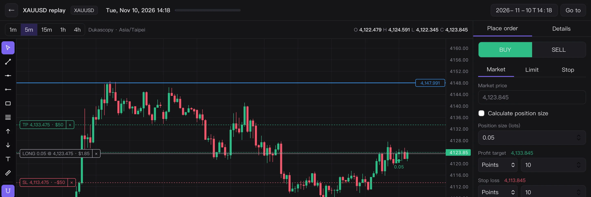

React · TypeScript · Hono · SQLite
Trade journal
My own trading journal, built to stop paying for TradeZella. It follows TradeZella's pages and workflow, holds my trade history, and adds a replay for practising entries on past gold prices.
The code stays private because my trade data lives next to it.
- 114trades moved over from TradeZella
- 7 / 7dashboard stats match TradeZella's
- 26strategy rules, each rule's stats match too
- 1 minsmallest replay step, on Dukascopy prices
- Problem
- I liked TradeZella's workflow, not paying a subscription for one account's trades.
- Approach
- Same pages, flow and terms, on a local SQLite file. A check script compares every number with TradeZella's export.
- Replay
- Market, limit and stop orders, SL and TP dragged on the chart, size from risk. If one minute touches both SL and TP, it counts as a stop.
- Trade-off
- Dukascopy candles differ slightly from my broker's, and there is no futures data yet.
- Role
- I wrote the spec from daily use and checked the numbers. Claude Code wrote the code.
